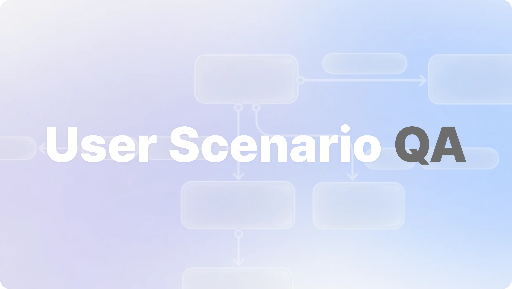
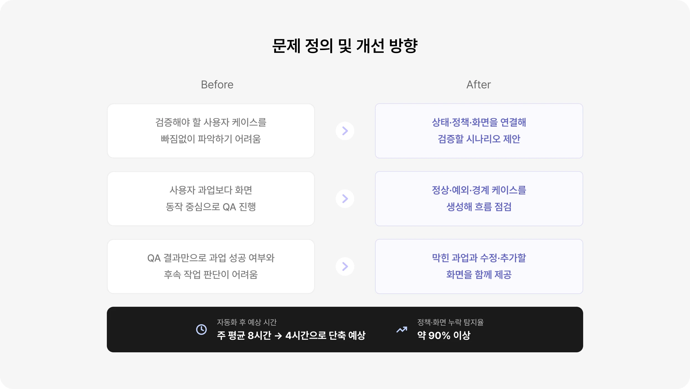
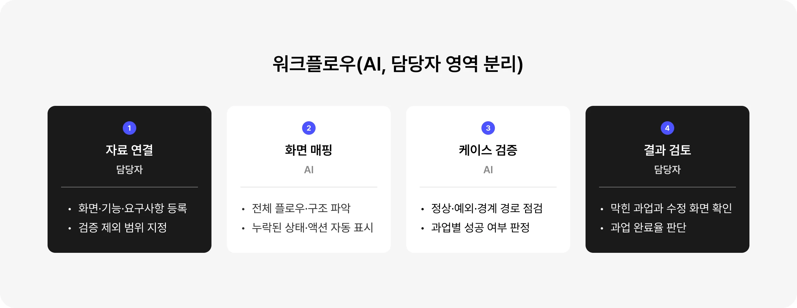

Overview
사용자 케이스별 핵심 과업 완료 여부와
정책·화면 누락 검증하기
커머스의 주문·교환·반품은 여러 정책과 사용자 케이스가 얽혀 있어 기존 QA 방식으로는 사용자별로 핵심 과업을
완료했는지 한눈에 판단하기 어려웠습니다. 이에 요구사항과 정책 문서, 구현 화면을 입력하면 AI가 사용자 시나리오를
구성하고 정상·예외·경계 경로를 점검해 과업이 막힌 단계와 원인, 수정이 필요한 화면을 제안하도록 설계했습니다.
담당자는 AI가 제시한 근거를 검토해 최종 수정 방향을 결정하고 이를 후속 작업으로 연결합니다. 이를 통해 QA 시간을
8시간에서 4시간으로 50% 단축하고 정책·화면 누락 탐지율 90% 이상을 달성하는 것을 목표로 했습니다.

Background
사용자 케이스별 핵심 과업을 방해하는정책·화면 누락을 발견해요.
복잡한 커머스 정책과 화면을 연결해 검증 시나리오의 누락을 줄이고 발견한 문제를 수정 과제로
이어지는 방향으로 개선안을 설정했습니다. 실제 업무 플로우에 적용했을 때 주 평균 8시간이 걸리던
QA 준비·검토 업무를 4시간으로 단축하고, 검증용 사례 기준 정책·화면 누락 탐지율 90% 이상을
달성하는 것을 목표로 했습니다.

Workflow
AI는 화면 매핑과 사용자 케이스를
검토하고, 담당자는 수정 범위를
결정해요.
요구사항과 화면을 기준으로 반복해서 점검하는 업무는 AI가 맡고, 제품 맥락과 고객 영향을 고려해야 하는 판단은 담당자가 맡도록 역할을 나눴습니다. AI는 상태·액션의 누락과 정상·예외·경계 경로를
점검해 과업별 판단 근거를 제공하고, 담당자는 검증 범위를 설정하고 결과의 타당성을 검토해 실제
수정이 필요한 항목과 우선순위를 결정하도록 설계했습니다.

Solution
사용자 과업이 막힌 원인을 확인하고
우선순위와 후속 작업을 결정해요.
주문·교환·반품의 상태와 화면을 연결해 사용자가 겪을 수 있는 정상·예외 경로를 생성했습니다. 각
경로에서 필요한 액션과 입력값, 결과 화면이 갖춰져 있는지 점검하고 과업을 끝내지 못하는 단계와 그 원인을 결과 화면에 표시했습니다. 담당자는 막힌 과업을 펼쳐 사용자 경로를 확인한 뒤 관련
화면과 수정·추가할 항목을 바로 검토할 수 있습니다. 화면별 오류 목록을 다시 정리하지 않아도 어떤 사용자 과업에 영향을 주는 문제인지를 기준으로 다음 작업을 결정하도록 설계했습니다.